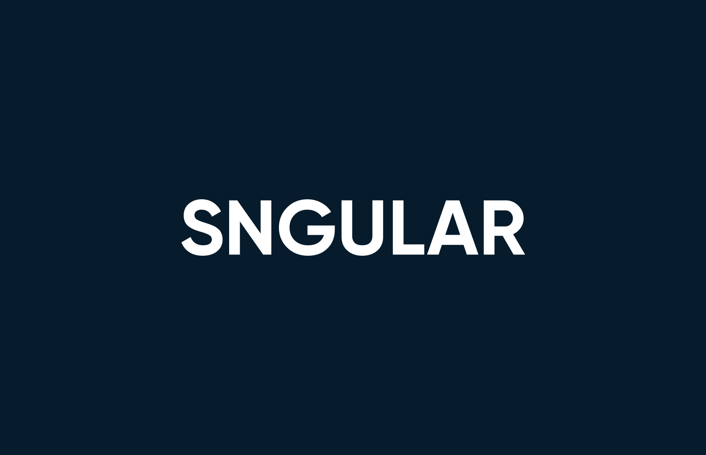
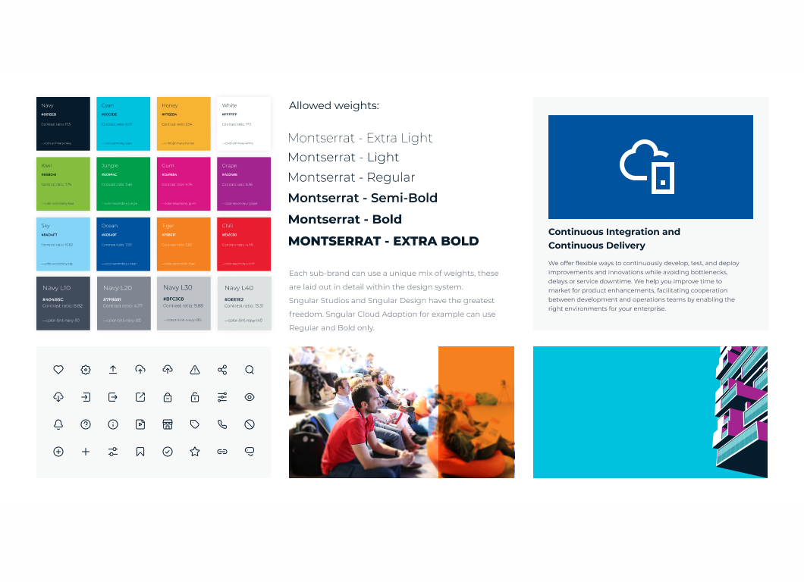
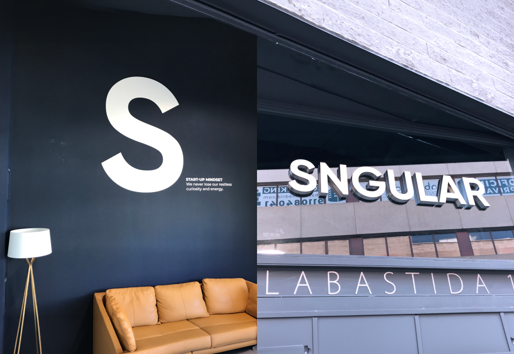
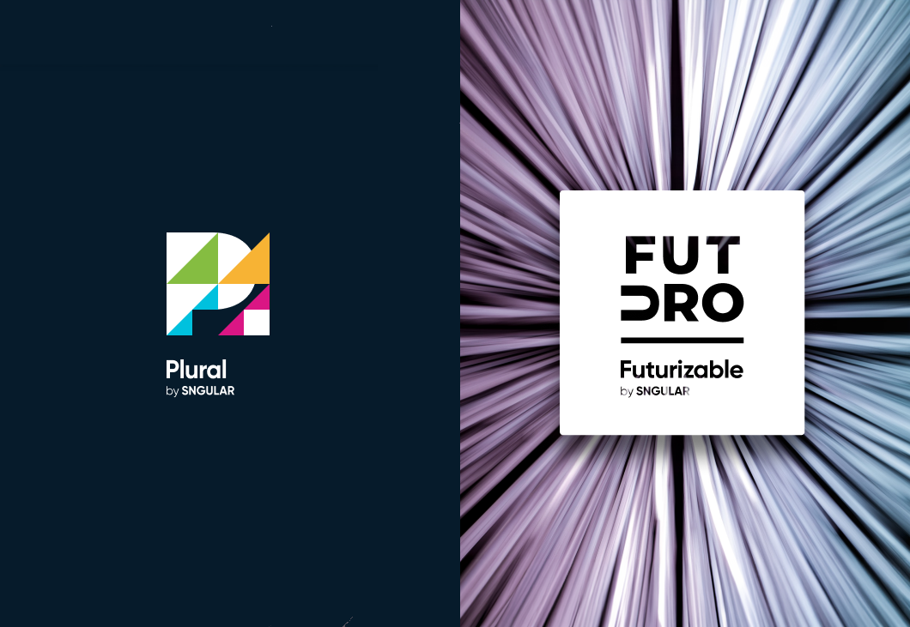
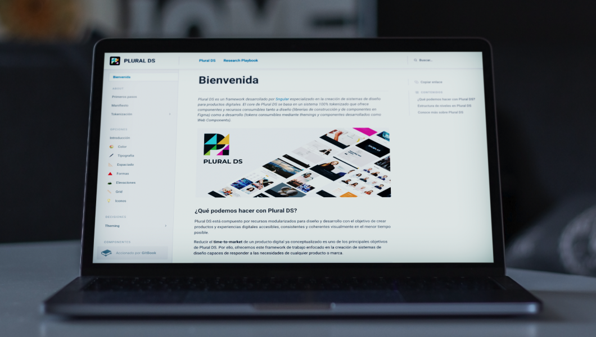
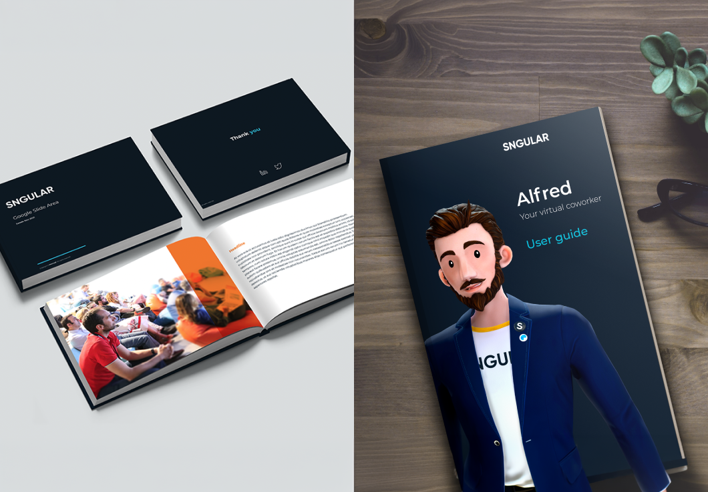
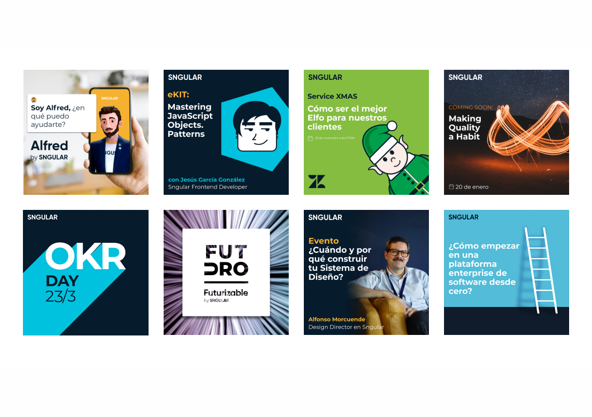
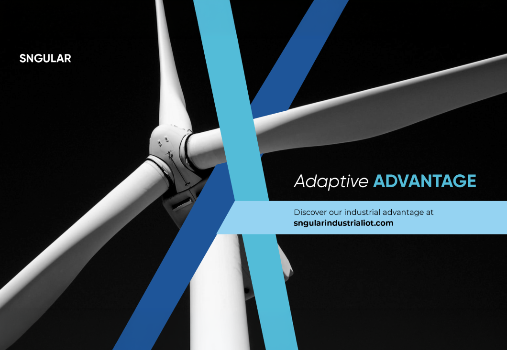
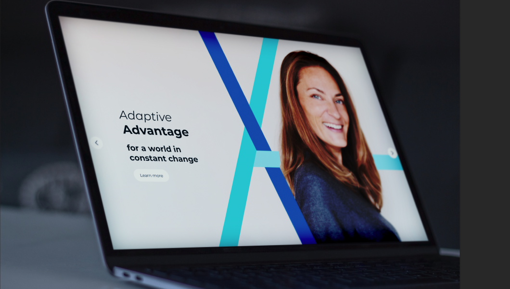
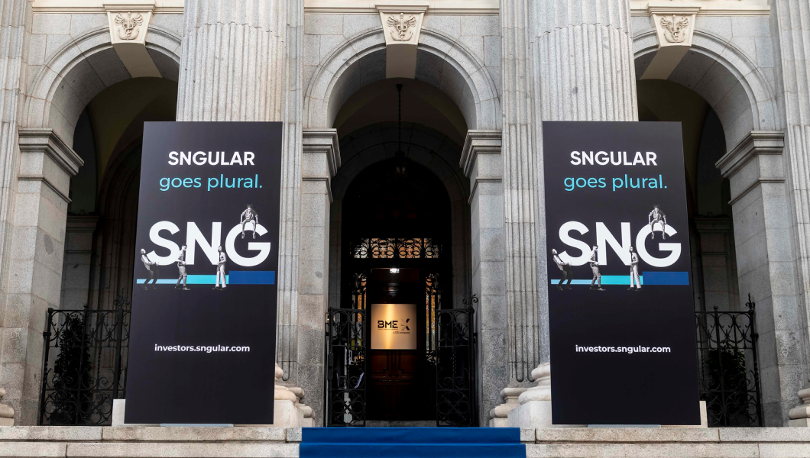

Sngular
Rebrand to IPO
Sngular is a technology and design consultancy headquartered in Madrid. It has about 1,500 people helping companies design, build and scale digital products, with teams spanning strategy, design, software engineering, cloud and data. It grew fast through organic expansion and acquisitions, with offices across Europe and the Americas, and listed on the Madrid Stock Exchange in 2021.


Brand architecture: a hybrid model
Sngular had grown into a mix of business lines, products and acquired brands, and no single brand architecture fitted them all. So I designed a hybrid that used two models side by side. Lines of business, such as Sngular Cloud, Sngular Design and Sngular Coding, sat under the master brand and carried the Sngular name directly. Products and brands that already had their own identity or recognition in the market were endorsed. A hybrid is unusual, but it was the only way to keep the company feeling like one Sngular while protecting the equity of the brands it owned.

Visual foundations
At the same time, the company had no shared visual language. Teams across the business were using all kinds of typefaces, colours, icons and photography styles. I codified a single set of visual foundations in the brand guidelines: primary and secondary colour palettes, one Google Font with a set of approved weights so it worked across every system and channel, a single icon family for the whole company, and clear illustration and photography styles. Bringing order to the output of a company of nearly 2,000 people was a long project, but it gave everyone the same toolkit to build from.



Endorsed brands
Products with a life of their own carry the "by Sngular" endorsement. Alfred is a chatbot we sell to clients, who can rebrand it and set its tone of voice while the technology underneath stays Sngular's. Futurizable is a paid series of live webinars with futurists on where technology is heading, sold for client events. Plural is our design system, sold as a product: the visual foundations change for each brand, but the architecture for web and mobile stays the same.

Consistent visual tone of voice
Sngular had never had this before. Business lines, relationship managers, salespeople and the C-suite were all building their own pitch decks, and the result was a visual mess. So we built a library from the ground up in Google Drive: preset sections around a single Google Slides template, set in a Google Font chosen as Sngular's typeface so it worked natively in Slides. It held ready-made case studies, company background, positioning, client referrals and pricing pages. Teams pick the sections they need, tailor them to the pitch and add a price. The result is consistent, professional presentations that are mostly self-serve, with no designer time needed.

Socialising
Sngular's organic channels already had a strong following, and we didn't want to spend heavily on Google, Meta or LinkedIn ads. So the social work had to carry itself, with a vibrant look in every small post. This is where all the visual foundations come together, with each social story using them to tell something compelling. People found it attractive, and the click-through rates showed it.
Adaptive Advantage
Positioning campaign
The campaign positioned Sngular's whole offer around one idea: as a technology company, we move with the times. When new technologies come to the fore, our teams can explain to clients what's changing, and fast. That ability to adapt is the advantage, and it's where "Adaptive Advantage" came from. We ran it as a 360 campaign across a microsite, videos, websites, paid ads, organic channels, blog posts and PR.



Rebrand to IPO
After four years, I'd done what I came to do and the brand was working well, but there was one last thing: Sngular's IPO on the Bolsa de Madrid. We built the launch campaign around the line "Sngular goes plural," another play on the name, because the public and our own staff could now own part of the company. It included an investor microsite within sngular.com, which went on to publish earnings and reports, along with a big PR push and live webcasts. On the day, there was a celebration at the historic Madrid Stock Exchange, with our graphics throughout the building and on display at the entrance. The IPO was oversubscribed, and it was a fitting way to finish.